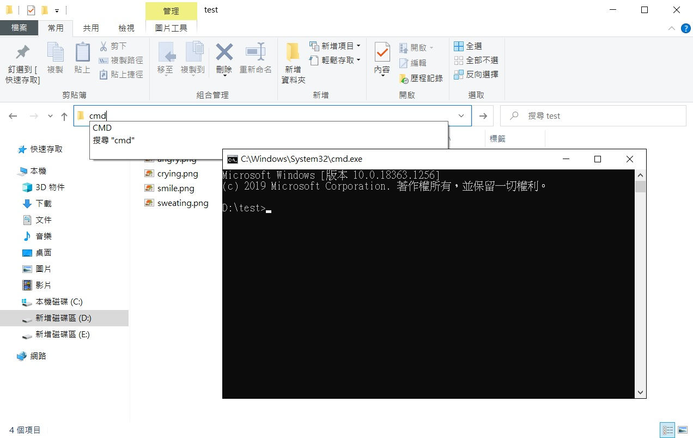

最近在學寫批次檔 需要輸出 log 檔作為紀錄 去網路搜尋之後 看到了有好幾種的指令
> output.log2> output.log2>> output.log1>&22>&1
對於一個門外漢來說 不如就直接 Trial and error 吧 (想直接看結論 點此)
前置作業
- 開啟檔案總管
- 在 D 槽下新增一個 test 資料夾，並放入幾個檔案
- 滑鼠點擊網址列
- 輸入 cmd 並按下 Enter
- 成功開啟 CMD (命令提示字元)，並且路徑是
D:\test

輸出 log
測試一: dir
先在 CMD 上用一個最簡單的指令 dir
螢幕上列出了 D:\test 的目錄結構
|
|
測試二: dir >a.log
螢幕上沒出現東西
但多了一個 a.log 的檔案
打開來看是
|
|
a.log 內容長得跟 “測試一” 的螢幕一樣
代表 >a.log 成功把螢幕上的東西輸出到 log 檔中
測試三: dir 1>b.log
螢幕還是沒出現東西
但多了一個 b.log
打開來看是
|
|
除了多了一個 a.log 的檔案
其他跟 “測試一” 的結果相同
代表 > 與 1> 功能相同
測試四: dir no.png
再來用 dir 找一個不存在的檔案
|
|
螢幕上跑出 找不到檔案 的訊息
測試五: dir no.png 1>c.log
接著使用 1> 試著將錯誤訊息輸出到 log 檔
|
|
咦？螢幕上怎麼還有東西呢
而且 c.log 也有產生出來
打開來看是
|
|
喔～ 錯誤訊息輸出到螢幕上 但沒有錯誤的部分輸出到 log 檔中了
測試六: dir no.png 2>d.log
這次用用看 2> 看會有什麼效果
|
|
咦？螢幕變成輸出沒有錯誤的部分
那 d.log 內容打開是
|
|
這個結果跟 “測試五” 完全相反呢！
代表 1> 輸出沒有錯誤的 log
2> 輸出有錯誤的 log
小結
>等於1>，負責輸出沒錯誤的部分2>負責輸出有錯誤的部分- 1 的正式名稱為
stdout標準輸出 2 的正式名稱為stderr標準錯誤輸出
合併不同類型的 log
測試七: dir no.png >e.log 2>&1
這次來試試 2>&1
螢幕上沒有東西
而 e.log 打開內容是
|
|
喔～ 沒錯誤的跟有錯誤的 log 都輸出到同個檔了呢
原來 >e.log 把 stdout 輸出到 log 檔中
2>&1 把 stderr 輸出到 stdout
測試八: dir no.png 2>&1 >f.log
這次把 2>&1 移到 >e.log 前面
螢幕上出現了
|
|
f.log 打開來內容是
|
|
這結果跟 “測試五” 一樣 (1>c.log)
代表執行 2>&1 時， >f.log 還未生效
所以 stderr 還是輸出到螢幕上了
測試九: dir no.png 2>g.log 1>&2
這次改成輸出 stderr 到 log 檔 並把 stdout 輸出到 stderr
結果螢幕沒有東西
而 g.log 打開來是
|
|
這個結果跟 “測試七” 一模一樣 (>e.log 2>&1)
小結
>把螢幕上的 log 輸出到檔案>&把 stdout 輸出到 stderr 的輸入，或是把 stderr 輸出到 stdout 的輸入
覆蓋或接續寫 log
測試十: type empty.log 2>h.log
這次試試 type 這個指令 可以把指定的檔案印在螢幕上 我們指定一個不存在的檔案
螢幕上沒出現東西
但產生了 h.log 檔案
打開來是
|
|
接著新增一個名字叫 empty.log 的檔案
再次嘗試相同的指令
結果螢幕上還是沒有東西
而且打開 h.log 也沒有內容
為什麼呢？
因為 2> 只會輸出錯誤訊息
然後 empty.log 這個檔案也確實存在
所以不會報錯說找不到檔案
沒有報錯當然就不會有錯誤訊息寫入 h.log 囉
不過你可以發現～
就算沒有要輸出東西
這個 h.log 還是被清空了
原本裡面還寫著 “系統找不到指定的檔案。” 的訊息
現在已經不見了
測試十一: type haha.log 2>>i.log
這次我們用兩個大於 >>
看看有什麼不同的效果
先叫 type 印一個不存在的檔案
螢幕上沒有東西
打開 i.log 的內容是
|
|
接著執行相同的指令共三次
螢幕依舊沒有東西
打開 f.log 的內容是
|
|
代表兩個大於會接續寫下去 而不是覆蓋掉檔案
小結
當 log 檔存在時
>會覆蓋掉檔案 (override)>>會從檔案結尾接續寫下去 (append)
結論
- log 種類
stdout標準輸出: 代號為1，正常執行時的 logstderr標準錯誤輸出: 代號為2，出現錯誤時的 log
- 輸出 log 的指令
command >file: 輸出 stdout 到 filecommand 1>file: 同上command 2>file: 輸出 stderr 到 filecommand >file 2>&1: 將 stdout 和 stderr 同時輸出到 filecommand >>file: 若 file 存在，就從結尾接續寫下去